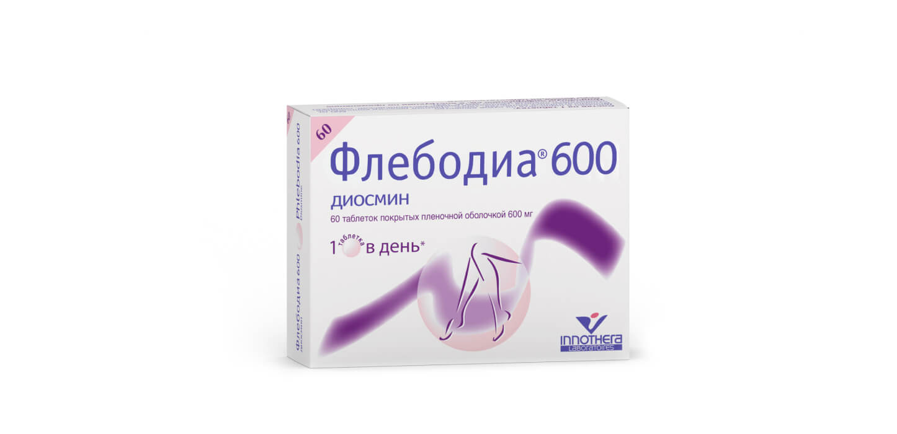
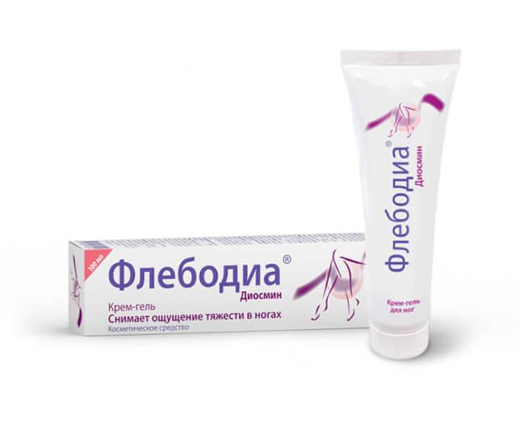

Беременность и хронические заболевания вен нижних конечностей тесно связаны
Факторами риска развития ХЗВ традиционно признают возраст, женский пол, ожирение, наследственность. К специфическим женским факторам риска относят прием гормональных препаратов (эстрогены, гестагены), менопаузу и беременность [1]. Почему?
Дело в том, что в этот период в организме женщины происходят физиологические изменения, негативно влияющие на вены:
- Увеличивается объем циркулирующей крови.
- Под воздействием изменений гормонального фона снижается тонус венозной стенки и расширяется просвет вен.
- Замедляется отток крови из вен нижних конечностей и малого таза из-за сдавления их растущей маткой и увеличения внутрибрюшного давления.
Предупредить развитие венозной патологии, уменьшить риск развития хронических заболеваний вен помогут следующие рекомендации:
Уже с ранних сроков целесообразно ежедневно носить профилактический компрессионный трикотаж, так как беременность всегда сопровождается снижением тонуса венозной стенки и склонностью к замедлению оттока крови из вен нижних конечностей.
Если Вам приходится долго стоять — переминаетесь с ноги на ногу, периодически приподнимайтесь на носки
Если Вам приходится долго сидеть — делайте небольшие, на 3-5 мин, перерывы, во время которых пройдитесь по помещению.
Носите удобную одежду, которая не стесняет движений, не оказывает чрезмерного давления на живот и не перетягивает, как жгутом, ноги.
Контролируйте свой вес, не допускайте чрезмерного набора массы тела. Ограничьте употребление поваренной соли, легкоусвояемых углеводов.
Для ежедневного ношения во время беременности лучше подходит обувь на невысоком, до 3-4 см, устойчивом каблуке.
Во время беременности меняется работа желудочно-кишечного тракта. Проводите профилактику запоров: пейте достаточное количество жидкости, (6-10 стаканов в день) включайте в свой рацион свежие фрукты и овощи.
Перед сном, в конце водных процедур, ополаскивайте стопы и голени прохладной водой — это уменьшит чувство тяжести и распирания, дискомфорт в ногах.
Во время отдыха старайтесь приподнимать ноги на 1О см выше уровня сердца с помощью специальной подушки или мягкого валика.
Пользуйтесь помощью родных и близких: полезен массаж ног легкими поглаживающими движениями по направлению от стопы к бедру (снизу вверх) в течение 5-1О мин.
Специальная лечебная физкультура поможет улучшить венозный отток:
- Сидя на гимнастическом коврике с выпрямленными ногами, обопритесь ладонями об пол позади себя.Поочередно сгибайте и разгибайте стопы в голеностопном суставе (вперед и назад). Поочередно сгибайте и разгибайте пальцы стоп.
- Сидя на стуле, ноги немного вытянуть вперед, стопы прижаты к полу. Одновременно обе стопы сгибайте в голеностопных суставах (на себя), затем выпрямляйте.
- Сидя на стуле, колени согнуты под углом 90°, одновременно поднимайте правую пятку и левый носок и наоборот.
- Стоя, ноги вместе, руки вдоль туловища. На вдохе встаньте на носки, на выдохе вернитесь в исходное положение.
- Стоя, ноги вместе, руки вдоль туловища. На вдохе отведите плечи назад, на выдохе расслабьте плечи и наклоните вперед голову.
- Стоя у стены, руки на уровне плеч. Ладонями обопритесь на стену. На вдохе встаньте на носки, на выдохе опуститесь на пятки.
- Ходьба на месте, не отрывая носки от пола.
Помните!
- При появлении дискомфорта и болей в области живота выполнение упражнений необходимо прекратить, следует обратиться к акушеру-гинекологу!
- Все упражнения необходимо выполнять медленно, вдох-выдох тоже должен быть медленным. Не делайте слишком глубокий вдох — это может спровоцировать головокружение.
- Лечебная физкультура помогает уменьшить явления венозного застоя, но не может использоваться в качестве единственного метода лечения при сформировавшихся заболеваниях вен. Если Вас беспокоят чувство тяжести и распирания в ногах, боль, отёки голеней, Вы заметили расширенных подкожных вен — обратитесь к флебологу.
Рекомендации подготовлены совместно со специалистами Первого флебологического центра www.phlebo1.ru
1. Российские клинические рекомендации по диагностике и лечению хронических заболеваний вен. Флебология. 2018; 12 (3): 135 — 229
Для лечения варикоза и ухода за кожей ног
Флебодиа 600
для лечения варикоза и других заболеваний вен: уменьшает симптомы тяжести, усталости, распирания, боли, усиливающейся к концу дня, отёков3
 РУ ЛП-№ (003656) РГ-RU
РУ ЛП-№ (003656) РГ-RU
РУ ЛП-№ (003656) РГ-RU
1 таблетка в день
во время еды
во время еды
2 месяца
Крем-гель Флебодиа
для ухода за кожей ног: снимает чувство тяжести и усталости, восстанавливает ощущение комфорта, ухаживает за кожей ног
ЕАЭС № RU Д-LV.АГ81.8.04118
2 раза
утром и вечером
утром и вечером
Регулярно
Полезные статьи